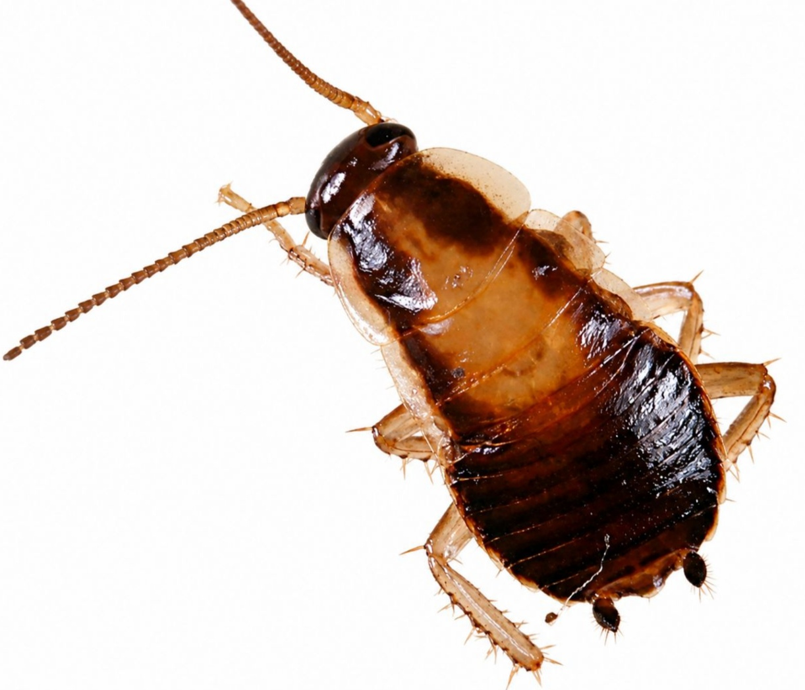
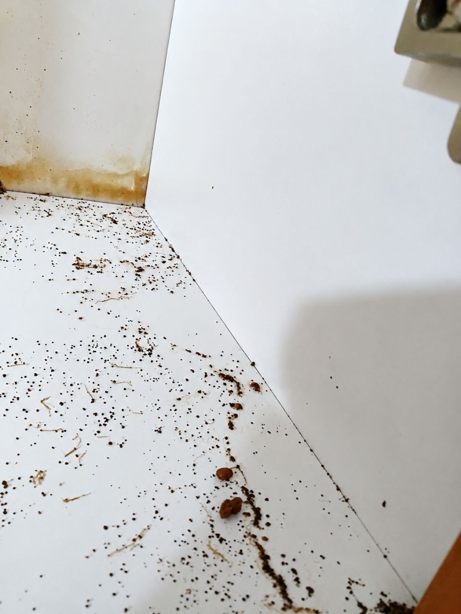
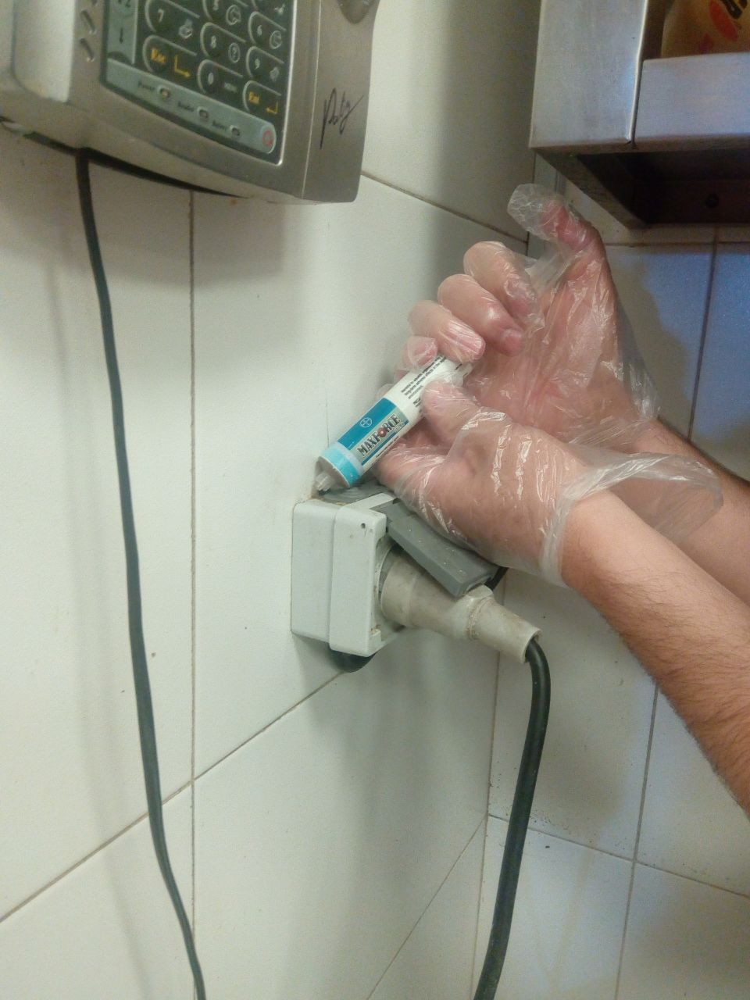

آیا تا به حال نیمهشب با روشن کردن چراغ آشپزخانه، یک سوسک ریز قهوهای را دیدید که با سرعت به سمت شکاف کابینت فرار کرد؟ این همان سوسک ریز آلمانی (Blattella germanica) است، یکی از مقاومترین و خطرناکترین آفات خانگی که اگر بهموقع کنترل نشود، میتواند به یک بحران بهداشتی تبدیل شود.
در این مقاله جامع، شما را با روشهای اصولی سمپاشی سوسک ریز آلمانی، نشانههای آلودگی، هزینهها و نکات پیشگیری آشنا میکنیم. اگر در تهران یا حومه ساکن هستید و با این آفت مواجه شدهاید، تا پایان این مطلب با ما همراه باشید.
سوسک ریز آلمانی (Blattella germanica) کوچکترین و در عین حال مقاومترین گونه سوسک در ایران است. طول بدن آن بین ۱۰ تا ۱۵ میلیمتر است و رنگ آن قهوهای روشن با دو نوار تیره موازی روی پشت سر است که تشخیص آن را از سایر سوسکها آسان میکند.
| خطر | توضیح |
|---|---|
| انتقال بیماری | ناقل سالمونلا، E. coli و سایر باکتریهای بیماریزا |
| آلرژی و آسم | فضولات و پوستاندازی آنها آلرژن قوی است |
| تولید مثل سریع | هر ماده تا ۴۰۰ تخم در سال میگذارد |
| آلودگی مواد غذایی | با عبور از روی مواد غذایی، آنها را آلوده میکند |
| آسیب به لوازم برقی | با نفوذ به داخل لوازم خانگی، باعث اتصالی و خرابی میشوند |
📊 بر اساس گزارشهای وزارت بهداشت، بیش از ۷۰٪ آلودگیهای سوسک در منازل تهران مربوط به سوسک ریز آلمانی است.
اگر هر یک از این نشانهها را در خانه خود مشاهده کردید، احتمالاً با سوسک ریز آلمانی مواجه هستید:

کنترل سوسک ریز آلمانی نیازمند روشهای تخصصی و اصولی است. در شرکت سمپاشی نانوفناوران، فرآیند سمپاشی را در مراحل زیر انجام میدهیم:
قبل از هر اقدامی، کارشناسان ما با بازرسی دقیق نقاط مختلف منزل شما، موارد زیر را شناسایی میکنند:
طعمهگذاری مؤثرترین روش برای کنترل سوسک ریز آلمانی است. در این روش:

در صورت نیاز، از سمپاشی با تجهیزات پیشرفته استفاده میشود:
همه سموم مورد استفاده در شرکت نانوفناوران:
⚠️ توجه: استفاده از سموم غیراستاندارد نهتنها مؤثر نیست، بلکه میتواند برای سلامتی شما خطرناک باشد. همیشه از خدمات تخصصی و سموم مجاز استفاده کنید.
| مزیت | توضیح |
|---|---|
| ضمانت خدمات | ارائه ضمانتنامه کتبی با پشتیبانی پس از سمپاشی |
| سموم استاندارد | استفاده از سموم مجاز وزارت بهداشت با بالاترین اثربخشی |
| کارشناسان مجرب | تیم آموزشدیده با بیش از ۲۰ سال تجربه |
| اعزام سریع | حضور کارشناسان در کوتاهترین زمان ممکن |
| مشاوره رایگان | ارائه مشاوره تخصصی بدون هیچ تعهدی |
| قیمت منصفانه | دریافت هزینه مناسب با کیفیت خدمات |
هزینه سمپاشی سوسک ریز آلمانی به عوامل مختلفی بستگی دارد:
| عامل | تأثیر بر هزینه |
|---|---|
| مساحت منزل | هرچه متراژ بیشتر باشد، هزینه بیشتر است |
| شدت آلودگی | آلودگی شدید نیاز به عملیات بیشتری دارد |
| نوع روش | طعمهگذاری یا سمپاشی عمومی |
| تعداد دفعات | برخی موارد نیاز به ۲ جلسه سمپاشی دارد |
💡 پیشنهاد: برای دریافت مشاوره رایگان و استعلام دقیق هزینه، با کارشناسان ما تماس بگیرید. شماره تماس: ۰۹۱۲۰۷۰۵۷۴۶
خیر، سموم مورد استفاده توسط شرکت نانوفناوران با رعایت کامل استانداردهای بهداشتی انتخاب میشوند. کارشناسان پس از پایان کار، نکات ایمنی لازم را به شما آموزش میدهند.
معمولاً بین ۳ تا ۷ روز طول میکشد تا آثار سمپاشی بهطور کامل نمایان شود. در روزهای اول ممکن است تعداد بیشتری سوسک مشاهده کنید که نشانه تأثیر سم است.
بسته به نوع سم مصرفی، معمولاً بین ۲ تا ۴ ساعت باید محیط را ترک کنید. کارشناسان زمان دقیق را قبل از شروع کار به شما اعلام میکنند.
با استفاده از خدمات ضمانتشده و رعایت نکات پیشگیری (تمیزکاری، بستن منافذ، نگهداری مواد غذایی در ظروف دربسته)، احتمال بازگشت سوسک به حداقل میرسد.
توصیه نمیشود. سمپاشی غیراصولی نهتنها مؤثر نیست، بلکه ممکن است بهدلیل استفاده از سموم غیرمجاز یا عدم تشخیص دقیق لانهها، مشکل را تشدید کند.
پس از سمپاشی، با رعایت این نکات ساده، میتوانید از بازگشت مجدد سوسکها جلوگیری کنید:
سوسک ریز آلمانی یکی از مقاومترین آفات خانگی است که بدون کمک متخصصان، بهسختی از بین میرود. شرکت سمپاشی نانوفناوران با بیش از ۲۰ سال تجربه و استفاده از سموم استاندارد و کارشناسان مجرب، آماده ارائه خدمات تخصصی و تضمینی به شماست.
🚀 همین حالا اقدام کنید:
📞 تماس فوری: ۰۹۱۲۰۷۰۵۷۴۶
💬 درخواست مشاوره رایگان: از طریق واتساپ یا ایتا
🔗 مشاهده سایر خدمات: کنترل آفات مسکونی